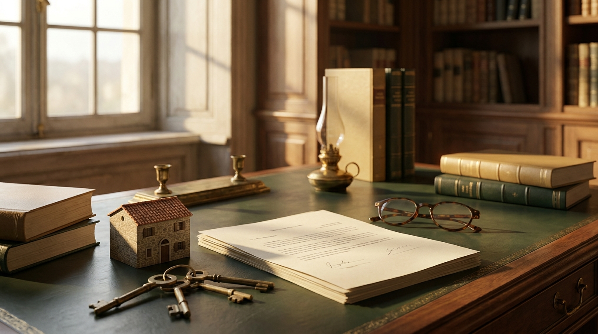

Casa in comodato e affitto: chi paga le tasse sui canoni
Concedere un immobile in comodato e poi scoprire che è stato affittato dal comodatario apre una domanda fiscale concreta: chi dichiara i canoni? La risposta ruota attorno alla nozione fiscale di possesso e alla differenza tra reddito fondiario e altre categorie reddituali. Vediamo come orientarsi senza incorrere in contestazioni dell'Agenzia delle Entrate.

Il caso
Il tema riguarda l'immobile dato in comodato d'uso gratuito (il prestito d'uso disciplinato dagli artt. 1803 e seguenti del Codice civile) che il comodatario decide di concedere a terzi in locazione, incassando i relativi canoni.
La domanda è semplice solo in apparenza: i redditi da locazione vanno dichiarati dal proprietario che ha ceduto l'uso, oppure dal comodatario che firma il contratto e incassa? La risposta dipende da come si qualifica fiscalmente quel reddito e da chi sia, ai fini tributari, il "possessore" dell'immobile.
Inquadramento normativo
Il punto di partenza è l'art. 26 del DPR 917/86 (TUIR), secondo cui i redditi fondiari si imputano a chi possiede l'immobile a titolo di proprietà o di altro diritto reale, indipendentemente dalla percezione. La determinazione del reddito segue poi gli artt. 36 e 37 TUIR.
Qui occorre una precisazione che spesso si trascura. Il "possesso" rilevante ai fini dell'art. 26 TUIR non coincide con il possesso civilistico dell'art. 1140 c.c., cioè con la mera relazione di fatto con il bene. In ambito fiscale il termine indica la titolarità di un diritto reale: proprietà, usufrutto, uso, abitazione. Il comodatario, al contrario, ha la sola detenzione: gode del bene in forza di un titolo (il comodato) ma senza alcun diritto reale.
Da qui discende la regola di fondo: il reddito fondiario, comprensivo dei canoni di locazione, resta imputabile al titolare del diritto reale, cioè al proprietario, anche quando i canoni materialmente li incassa un altro soggetto.
È però necessario distinguere le ipotesi, perché la qualificazione non è univoca:
- Locazione con il consenso del comodante. Se il proprietario autorizza il comodatario a locare, il reddito derivante conserva natura di reddito fondiario e va dichiarato dal proprietario, in quanto titolare del diritto reale ex art. 26 TUIR.
- Locazione senza titolo né consenso. Quando il comodatario concede in godimento il bene senza esserne legittimato, il quadro è più incerto: una parte degli interpreti riconduce comunque il reddito fondiario al proprietario; altra impostazione valuta la somma percepita dal comodatario come reddito diverso ai sensi dell'art. 67 TUIR. Si tratta di una materia tutt'altro che pacifica, da esaminare caso per caso anche alla luce degli orientamenti giurisprudenziali di volta in volta applicabili.
Giova ricordare che affermazioni nette su questo punto vanno sempre ancorate alla pronuncia specifica richiamata, con i suoi estremi (sezione, numero e anno): in assenza, il riferimento corretto resta quello normativo.
Implicazioni pratiche
Per il proprietario il messaggio è chiaro: cedere l'uso del bene non significa cedere la responsabilità fiscale sui redditi che ne derivano. Se l'immobile finisce locato, il rischio di una contestazione per redditi non dichiarati grava in primo luogo su chi è titolare del diritto reale.
Per il comodatario il punto di attenzione è duplice: da un lato la legittimazione a locare (il comodato gratuito non attribuisce di per sé il potere di sub-concedere il bene), dall'altro il corretto trattamento fiscale di quanto incassa.
L'incrocio dei dati a disposizione dell'Agenzia delle Entrate, dalla registrazione del contratto alle comunicazioni reddituali, rende oggi difficile che situazioni di questo tipo restino non rilevate.
Cosa fare in concreto
- Mettete per iscritto il comodato e specificate se il comodatario è autorizzato o meno a concedere il bene in locazione.
- Verificate chi deve dichiarare i canoni: in caso di locazione consentita, il reddito fondiario resta in capo al proprietario titolare del diritto reale.
- Conservate tracciabilità di flussi e accordi, così da poter ricostruire la posizione di ciascun soggetto in caso di controllo.
- Distinguete con attenzione le ipotesi di locazione consentita e non consentita, perché incidono sulla categoria reddituale applicabile.
- Prevedete una valutazione tecnica preventiva prima di formalizzare un comodato destinato a essere seguito da una locazione: la qualificazione fiscale dipende dai dettagli del singolo rapporto.
Conclusione
La cessione in comodato non sposta automaticamente sul comodatario il peso fiscale dei canoni. La regola dell'art. 26 TUIR àncora il reddito fondiario alla titolarità del diritto reale, con le distinzioni viste per i casi di locazione non autorizzata. Un assetto contrattuale chiaro è il presidio più efficace contro le sorprese.
Contributo informativo a cura di Tamburro & Partners - Avv. Giuseppe Tamburro. Non costituisce parere legale.
Ogni contratto ha il suo equilibrio.
Se vuoi una revisione delle clausole o una redazione su misura, scrivi allo studio. Ti rispondiamo entro un giorno lavorativo.